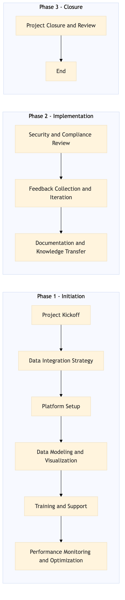

This process document outlines the IT-DA-05 Business Intelligence and Reporting Platform Tableau Power BI implementation for Expedia Group (OTA) and Amex GBT / Concur (TMC). The goal is to integrate and optimize data analytics tools to enhance decision-making processes.
| Trigger | Initiation of a new business intelligence and reporting platform project by the IT department, driven by strategic business needs or technological advancements. |
| Outcome | Successful deployment and integration of Tableau Power BI across all relevant systems, resulting in improved data visualization, analysis capabilities, and operational efficiency for both OTA and TMC teams. |
| Systems | Tableau Power BI Snowflake Kafka AWS SageMaker |

Click to enlarge
| Step | Name & Pain Point | Role | System | Input | Output | KPI | Flags |
|---|---|---|---|---|---|---|---|
| 1.1 | Project Kickoff Lack of clear project scope and objectives | Project Manager | N/A | Project Charter, Stakeholder List | Project Plan, Communication Plan | Stakeholder buy-in rate > 80% | ◆ Decision |
| 1.2 | Data Integration Strategy Complex data schema and compatibility issues | Data Engineer | Snowflake, Kafka, AWS SageMaker | System Requirements Document | Integration Architecture Diagram | Data integration success rate > 95% | ◆ Decision |
| 1.3 | Platform Setup Technical limitations or resource constraints | IT Specialist | Tableau, Power BI | Integration Architecture Diagram | Configured Platform Instances | Platform setup completion time < 4 weeks | ⚠ Exception |
| 1.4 | Data Modeling and Visualization Inadequate data quality or availability | BI Analyst | Tableau, Power BI | Business Requirements Document | Dashboards and Reports | User satisfaction with dashboards > 85% | ◆ Decision |
| 1.5 | Training and Support Resistance to change or technical difficulties | BI Specialist | Tableau, Power BI | Dashboards and Reports | Training Materials, User Guides | User adoption rate > 90% | ⚠ Exception |
| 1.6 | Performance Monitoring and Optimization Scalability issues or performance bottlenecks | IT Specialist | Tableau, Power BI | Dashboards and Reports | Optimized Performance Metrics | Platform response time < 2 seconds | ◆ Decision |
| 1.7 | Security and Compliance Review Data privacy concerns or regulatory requirements | IT Security Officer | Tableau, Power BI | Data Access Policies | Compliance Report | Compliance rate > 98% | ◆ Decision |
| 1.8 | Feedback Collection and Iteration Inadequate user feedback mechanisms | Project Manager | N/A | User Feedback | Updated Dashboards and Reports | Feedback resolution rate > 90% | ◆ Decision |
| 1.9 | Documentation and Knowledge Transfer Lack of comprehensive documentation | BI Specialist | Tableau, Power BI | Dashboards and Reports | Comprehensive Documentation | Knowledge transfer completion time < 2 weeks | ⚠ Exception |
| 1.10 | Project Closure and Review Unforeseen project delays or scope changes | Project Manager | N/A | Final Deliverables, Project Metrics | Project Report, Lessons Learned Document | Project completion time < 6 months | ⚠ Exception |